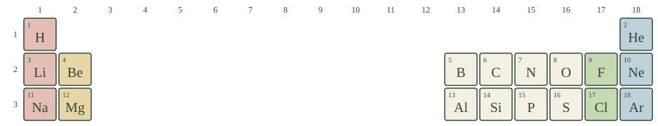

- Varje ruta i systemet är ett atomslag
- Atomnumret = antalet protoner
- Perioder är raderna — de visar hur många skal atomen använder
- Det yttersta skalet kallas valensskalet
- Grupper är kolumnerna — samma grupp betyder lika många valenselektroner
I förra avsnittet lärde du dig att antalet protoner bestämmer vilket ämne en atom är. Det periodiska systemet är en tabell där alla kända atomslag står uppradade efter just det. Varje ruta i tabellen är ett atomslag, och i rutan står ämnets beteckning — H för väte, O för syre — och en siffra som kallas atomnummer.
- Att rutorna blir fler ju längre ner i tabellen du kommer
- Var grupp 1 sitter, och var grupp 18 sitter
- Att varje ruta har både en bokstavsbeteckning och en siffra

Atomnumret
Atomnumret är antalet protoner i kärnan, inget mer komplicerat än så. Väte har atomnummer 1 och har en proton. Kol har atomnummer 6 och har sex protoner. Syre har atomnummer 8 och har åtta protoner.
Eftersom en neutral atom har lika många elektroner som protoner kan du läsa av båda talen på en gång. Ser du atomnummer 8 vet du att atomen har åtta protoner och åtta elektroner. Tabellen är ordnad efter stigande atomnummer, så den börjar med 1 uppe till vänster och räknar uppåt rad för rad.
Raderna kallas perioder
De vågräta raderna i tabellen kallas perioder, och vilken period ett ämne står i säger hur många elektronskal atomen använder. Ämnen i period 1 har elektroner i ett skal, ämnen i period 2 har elektroner i två skal, och ämnen i period 3 har elektroner i tre.
Det yttersta skalet har ett eget namn. Det kallas valensskalet, och det är där valenselektronerna sitter. Perioden talar alltså om vilket skal som är valensskal: står ett ämne i period 3 är det tredje skalet dess valensskal.
Går du från vänster till höger längs en rad ökar antalet elektroner ett i taget, och de fylls på i valensskalet. När skalet är fullt tar raden slut, och nästa ämne börjar på en ny rad med ett nytt valensskal.
Kolumnerna kallas grupper
De lodräta kolumnerna kallas grupper, och ämnen som står i samma grupp beter sig ofta likadant. Det beror på att de har lika många valenselektroner, alltså lika många elektroner i sitt yttersta skal. Och eftersom det är valenselektronerna som avgör hur ett ämne reagerar, kan du ofta gissa hur ett ämne beter sig bara genom att se var det står.
I flera av grupperna går det att läsa av direkt. Ämnen i grupp 1 har en valenselektron, ämnen i grupp 2 har två, och ämnen i grupp 17 har sju. I grupp 18 sitter ämnena som redan har fullt yttersta skal — de behöver ingenting och reagerar därför nästan inte alls.
- Varje ruta i systemet är ett atomslag
- Atomnumret visar antalet protoner i kärnan
- Systemet är ordnat efter stigande atomnummer
- Perioder är de vågräta raderna — de visar hur många elektronskal som används
- Det yttersta skalet kallas valensskalet — perioden talar om vilket skal det är
- Grupper är de lodräta kolumnerna — atomslag i samma grupp har lika många valenselektroner
Det periodiska systemet är ett sätt att ordna alla kända atomslag. Genom att placera dem i en bestämd ordning blir det lättare att se likheter och skillnader. Systemet visar därför inte bara vilka atomslag som finns, utan hjälper oss också att förstå deras egenskaper och hur de brukar reagera.
Varje ruta representerar ett atomslag. I rutan finns bland annat atomslagets kemiska beteckning och dess atomnummer.
Atomnummer
Atomnumret visar hur många protoner som finns i atomkärnan.
Väte har atomnummer 1 och har därför en proton. Kol har atomnummer 6 och har sex protoner. Syre har atomnummer 8 och har åtta protoner.
Eftersom antalet protoner bestämmer vilket atomslag en atom tillhör får varje atomslag ett eget atomnummer. I en neutral atom finns dessutom lika många elektroner som protoner, så en neutral syreatom har både åtta protoner och åtta elektroner.
Systemet är ordnat efter stigande atomnummer. Atomslag med få protoner finns i början och atomslag med fler längre fram.
Perioder
De vågräta raderna kallas perioder.
Vilken period ett atomslag tillhör hänger samman med hur många elektronskal som används i atomen. Atomslag i period 1 har elektroner i ett skal, atomslag i period 2 har elektroner i två skal, och atomslag i period 3 har elektroner i tre.
Det yttersta skalet har ett eget namn: valensskalet. Det är där valenselektronerna sitter, och det är därför det skalet som avgör hur atomslaget reagerar. Perioden talar alltså om vilket skal som är valensskal — ett atomslag i period 3 har sitt valensskal i det tredje skalet.
När man går från vänster till höger i en period ökar antalet protoner och elektroner ett steg i taget, och elektronerna fyller på valensskalet tills man når radens slut. Då är skalet fullt, och nästa atomslag börjar på en ny rad med ett nytt valensskal.
Grupper
De lodräta kolumnerna kallas grupper.
Atomslag i samma grupp har ofta liknande kemiska egenskaper. Det beror på att deras atomer har lika många valenselektroner — alltså elektroner i valensskalet.
Valenselektronerna avgör hur ett atomslag reagerar. Därför kan man ofta använda ett atomslags plats i systemet för att förutsäga hur det beter sig, utan att slå upp någonting.
I många av huvudgrupperna går det att koppla gruppnumret till antalet valenselektroner. Atomslag i grupp 1 har en valenselektron, atomslag i grupp 2 har två, och atomslag i grupp 17 har sju. I grupp 18 finns ädelgaserna, som har fullt valensskal och därför reagerar mycket lite.
Varför ser systemet ut som det gör?
Periodiska systemet har en märklig form. Första raden har bara två atomslag. Andra och tredje har åtta var. Fjärde och femte har arton. Och längst ner ligger två rader utbrutna för sig, som om de inte fick plats.
Det ser ut som en tabell någon byggt lite hur som helst. Det är det inte. Formen följer exakt av hur elektronerna kan ordna sig runt kärnan.
I standardtexten sa vi att elektronerna sitter i skal, och att varje skal rymmer ett visst antal. Det stämmer, men skalen är inte odelbara. Varje skal består av orbitaler — områden med olika form, där elektronerna kan befinna sig. Och det är antalet orbitaler som bestämmer radernas längd.
Den enklaste sorten heter s-orbital och rymmer två elektroner. Det första skalet har bara en s-orbital, och därför rymmer det bara två elektroner. Det är hela förklaringen till att första raden har två atomslag: väte och helium, och sedan är skalet fullt.
Från andra skalet tillkommer p-orbitaler. De är tre till antalet och rymmer sex elektroner tillsammans. Två plus sex blir åtta — och därför har andra och tredje raden åtta atomslag var.
Från fjärde skalet tillkommer d-orbitaler. De är fem stycken och rymmer tio elektroner. Två plus sex plus tio blir arton, och därför har fjärde och femte raden arton atomslag. De tio extra är just övergångsmetallerna, blocket i mitten av systemet — järn, koppar, zink, guld och alla de andra. De sitter där för att d-orbitalerna fylls på i mitten av raden.
Och de två utbrutna raderna längst ner? Där fylls f-orbitaler, som är sju stycken och rymmer fjorton elektroner. Det ger fjorton atomslag som egentligen hör hemma mitt inne i raden ovanför — men om de ritades där skulle tabellen bli så bred att den inte får plats på ett papper. Därför bryter man ut dem.
Så tabellens form är inte ett designval. Varje rads längd — 2, 8, 8, 18, 18, 32 — är summan av hur många elektroner de tillgängliga orbitalerna rymmer.
Om modellen: skalmodellen från standardnivån räknar rätt. Den säger korrekt hur många elektroner som får plats i varje skal. Det den inte förklarar är varför just de talen, och varför tabellen har den form den har. Orbitalerna ger svaret — och de är samma orbitaler som dyker upp i fördjupningen till avsnitt 1.
- Alkalimetaller (grupp 1) har en valenselektron och reagerar lätt
- Alkaliska jordartsmetaller (grupp 2) har två
- Halogener (grupp 17) har sju och vill ha en till
- Ädelgaser (grupp 18) har fullt skal och reagerar nästan inte alls
- Antalet valenselektroner förklarar hur varje grupp beter sig
Fyra av grupperna har egna namn. Det är de fyra där sambandet mellan valenselektroner och uppförande syns tydligast.
Alkalimetaller — grupp 1
Ämnena i grupp 1 kallas alkalimetaller, och litium, natrium och kalium hör hit. Deras atomer har en enda valenselektron, som sitter ensam längst ut och hålls kvar svagt.
Det gör att alkalimetallerna lätt gör sig av med den och blir positiva joner — precis som litium gjorde i förra avsnittet. Och eftersom de reagerar så lätt hittar man dem nästan aldrig som rena ämnen i naturen; de har redan reagerat med något annat.
Reaktiviteten ökar längre ner i gruppen, så kalium reagerar kraftigare än natrium, som i sin tur reagerar kraftigare än litium. Alkalimetaller är dessutom ovanligt mjuka och går att skära med kniv.
Alkaliska jordartsmetaller — grupp 2
Ämnena i grupp 2 kallas alkaliska jordartsmetaller, och magnesium och kalcium hör hit. Deras atomer har två valenselektroner, och de reagerar också ganska lätt — men oftast inte lika kraftigt som grupp 1, eftersom det är jobbigare att göra sig av med två elektroner än med en.
Kalcium och magnesium finns i många mineral, och de finns också i kroppen. Kalcium sitter till exempel i skelett och tänder.
Halogener — grupp 17
Ämnena i grupp 17 kallas halogener, och fluor, klor, brom och jod hör hit. Deras atomer har sju valenselektroner och saknar alltså bara en enda för att komma upp i åtta.
Det gör dem reaktiva, men åt andra hållet än alkalimetallerna. En halogen vill hellre ta emot en elektron än att ge bort någon, och blir därför en negativ jon. Just därför passar halogener och alkalimetaller så bra ihop: den ena vill bli av med exakt en elektron, den andra vill ta emot exakt en.
Halogener finns sällan ensamma i naturen. Klor sitter till exempel ihop med natrium i vanligt koksalt.
Ädelgaser — grupp 18
Ämnena i grupp 18 kallas ädelgaser, och helium, neon och argon hör hit. Deras atomer har redan fullt yttersta skal, så de behöver varken ge bort eller ta emot något, och därför reagerar de nästan inte alls.
Det är precis därför de används. Man väljer en ädelgas när man vill ha ett ämne som inte gör någonting — helium i ballonger, argon i lampor och vid svetsning. Ädelgaserna blir viktiga längre fram, eftersom andra ämnen strävar efter att få samma elektronuppsättning som en ädelgas.
- Alkalimetaller (grupp 1) har en valenselektron och reagerar lätt
- Alkaliska jordartsmetaller (grupp 2) har två valenselektroner
- Halogener (grupp 17) har sju valenselektroner och är reaktiva
- Ädelgaser (grupp 18) har fullt valensskal och reagerar nästan inte alls
- Antalet valenselektroner förklarar varför grupperna beter sig som de gör
Fyra grupper har egna namn, och de är de som visar tydligast hur valenselektronerna styr.
Alkalimetaller
Atomslagen i grupp 1 kallas alkalimetaller. Litium, natrium och kalium är exempel.
Deras atomer har en enda valenselektron. Den sitter ensam längst ut och hålls kvar svagt, vilket gör att alkalimetallerna lätt avger den och blir positiva joner. Därför reagerar de lätt, och därför förekommer de sällan som rena ämnen i naturen — de har redan reagerat med något annat.
Reaktiviteten ökar längre ned i gruppen. Kalium reagerar kraftigare än natrium, som i sin tur reagerar kraftigare än litium.
Alkalimetaller är mjuka metaller, så mjuka att de går att skära med kniv.
Alkaliska jordartsmetaller
Atomslagen i grupp 2 kallas alkaliska jordartsmetaller. Magnesium och kalcium är exempel.
Deras atomer har två valenselektroner. Även dessa metaller reagerar förhållandevis lätt, men oftast inte lika kraftigt som alkalimetallerna — att avge två elektroner kräver mer än att avge en.
Kalcium och magnesium är vanliga i mineral och förekommer också i levande organismer. Kalcium finns till exempel i skelett och tänder.
Halogener
Atomslagen i grupp 17 kallas halogener. Fluor, klor, brom och jod är exempel.
Deras atomer har sju valenselektroner och saknar alltså bara en för att nå åtta. Det gör dem reaktiva, men på motsatt sätt mot alkalimetallerna: halogenerna tar hellre upp en elektron än avger någon, och blir därför negativa joner.
Just därför passar halogener och alkalimetaller så bra ihop. Den ena vill bli av med en elektron, den andra vill ta emot en.
Halogener förekommer sällan ensamma i naturen utan sitter oftast ihop med andra atomslag. Klor finns till exempel i vanligt koksalt.
Ädelgaser
Atomslagen i grupp 18 kallas ädelgaser. Helium, neon och argon är exempel.
Ädelgasernas atomer har fullt valensskal. De behöver varken avge eller ta upp elektroner, och därför reagerar de nästan inte alls med andra ämnen.
Det är också därför de används där man vill ha ett ämne som inte gör något. Helium i ballonger, argon i lampor och vid svetsning.
Ädelgaserna visar tydligt hur atomens elektroner påverkar dess kemiska egenskaper — och de blir viktiga längre fram, eftersom andra atomslag strävar efter att få samma elektronuppsättning som en ädelgas.
Varför ökar reaktiviteten nedåt i grupp 1 men uppåt i grupp 17?
Standardtexten nämnde att kalium reagerar kraftigare än natrium, som reagerar kraftigare än litium. Reaktiviteten ökar alltså nedåt i alkalimetallgruppen.
Men bland halogenerna är det tvärtom. Fluor är den mest reaktiva av dem, och reaktiviteten minskar nedåt: fluor, klor, brom, jod. Varför går det åt olika håll i två grupper som annars beter sig så spegelvänt?
Svaret handlar om avstånd.
Ju längre ned i en grupp man kommer, desto fler skal har atomen, och desto längre från kärnan sitter valenselektronerna. Kärnans dragningskraft avtar med avståndet, precis som all elektrisk attraktion.
För en alkalimetall är det en fördel. Den ska göra sig av med sin ytterelektron, och ju svagare kärnan håller fast den, desto lättare går det. Kaliums ytterelektron sitter längre ut än natriums och lossnar därför lättare. Reaktiviteten ökar nedåt.
För en halogen är det en nackdel. Den ska ta upp en elektron, och den elektronen hamnar i valensskalet. Ju längre ut valensskalet ligger, desto svagare drar kärnan i den nya elektronen, och desto mindre villig är atomen att ta emot den. Fluor har sitt valensskal närmast kärnan av alla halogener och drar därför hårdast. Reaktiviteten minskar nedåt.
Samma orsak, två motsatta effekter — beroende på om atomen vill avge eller ta emot.
Det förklarar också varför fluor är ett av de mest reaktiva ämnen som finns. Det reagerar med nästan allt, även med glas och med ämnen som annars räknas som reaktionströga.
Om modellen: standardtexten gav reaktiviteten som ett faktum att lära sig — kalium kraftigare än natrium. Med avståndet till kärnan blir det något du kan räkna ut, och du behöver bara veta åt vilket håll atomen vill.
- De flesta ämnen i systemet är metaller
- Metaller leder ström och värme, går att forma, och har glans
- Icke-metaller finns till höger och leder ström dåligt
- Halvmetaller ligger emellan — kisel är den viktigaste
- Var ett ämne står säger något om hur det beter sig
Periodiska systemet går också att dela in på ett annat sätt: i metaller, icke-metaller och några ämnen som ligger mitt emellan. De flesta ämnen är metaller — av de drygt 110 kända atomslagen är omkring åttio metaller, och de finns till vänster och i mitten av tabellen.
Vad metaller har gemensamt
Metaller leder elektricitet bra. Det är därför det sitter koppartråd inuti sladdar, och därför man aldrig ska stoppa något av metall i ett eluttag.
De leder värme bra. En metallsked i het soppa blir varm nästan direkt, medan en träslev inte gör det. Samma sak gör att metall känns kallare än trä när du tar i det, fast båda har samma temperatur — metallen leder bort värmen ur handen fortare.
De går att forma. Metall kan hamras, böjas och dras ut till tråd utan att spricka, och guld är extremast: ett enda gram guld går att hamra ut till ett ark på nästan en kvadratmeter. Det är därför man kan tillverka saker av metall på ett sätt som inte fungerar med glas eller sten.
De har metallglans. En ren metallyta glänser på ett särskilt sätt, men glansen mattas ofta med tiden eftersom ytan reagerar med luften — silver blir mörkt, koppar blir grönt, järn rostar.
De flesta är fasta och behöver hög värme för att smälta. Järn smälter först vid drygt 1500 grader och volfram vid över 3400. Ett enda undantag finns: kvicksilver, som är flytande redan i rumstemperatur. Metaller väger också olika mycket — litium flyter på vatten, medan bly och guld är bland de tyngsta ämnen du kan hålla i handen.
Icke-metaller
Icke-metaller finns framför allt på högra sidan av tabellen, och syre, kväve, kol, klor och svavel hör hit. De leder ström dåligt, och flera av dem är gaser i rumstemperatur. De som är fasta är ofta spröda — slår du på svavel smulas det sönder i stället för att bucklas som metall skulle göra.
Icke-metallerna är få, men de är desto viktigare för livet. Kol, väte, syre och kväve utgör tillsammans nästan allt som lever.
Halvmetaller
Mellan metallerna och icke-metallerna ligger några ämnen som kallas halvmetaller, och kisel är den viktigaste. Kisel ser ut som en metall och glänser som en metall, men leder ström dåligt — utom under vissa förhållanden. Just det gör kisel till grunden för all elektronik, och varje dator och mobiltelefon bygger på kiselkretsar.
Det systemet visar
Periodiska systemet är alltså mer än en lista. Står två ämnen i samma grupp har de lika många valenselektroner och beter sig därför ofta likadant, och står de i samma period har de lika många skal och samma valensskal.
Det betyder att du inte behöver lära dig varje ämne för sig. Du kan ofta räkna ut hur ett ämne beter sig bara genom att se var det står, och det blir ännu tydligare i nästa avsnitt när vi tittar på kemiska bindningar.
- De flesta atomslag är metaller — de finns till vänster och i mitten
- Icke-metaller finns till höger i systemet
- Halvmetaller ligger mellan dem och har egenskaper från båda
- Metaller leder ström och värme, är formbara och har metallglans
- Platsen i systemet säger något om både uppbyggnad och egenskaper
Det periodiska systemet kan också delas in i metaller, icke-metaller och några ämnen med egenskaper mitt emellan.
De flesta atomslag är metaller, och de finns framför allt till vänster och i mitten av systemet. Av de drygt 110 kända atomslagen är omkring åttio metaller.
Metallernas egenskaper
Metaller delar en rad egenskaper som skiljer dem från andra ämnen.
De leder elektricitet bra. Det är därför sladdar har koppartråd inuti, och därför man inte ska stoppa metallföremål i ett eluttag.
De leder värme bra. En metallsked i het soppa blir varm nästan direkt, medan en träslev inte gör det. Samma sak gör att metall känns kallare än trä vid samma temperatur — metallen leder bort värmen från handen snabbare.
De är formbara. Metaller går att hamra ut, böja och dra till tråd utan att de spricker. Guld är extremast: ett enda gram guld kan hamras ut till ett ark på nästan en kvadratmeter. Det är därför metaller går att tillverka saker av på ett sätt som glas och sten inte gör.
De har metallglans. En ren metallyta reflekterar ljus på ett karakteristiskt sätt. Den mattas ofta med tiden, eftersom ytan reagerar med luften — silver blir mörkt, koppar blir grönt, järn rostar.
De flesta är fasta vid rumstemperatur och har höga smältpunkter. Järn smälter vid drygt 1500 grader och volfram vid över 3400. Kvicksilver är undantaget som bekräftar regeln — det är den enda metall som är flytande vid rumstemperatur.
Metaller har också olika densitet. Litium flyter på vatten, medan bly och guld är bland de tyngsta ämnen du kan hålla i handen.
Icke-metaller
Icke-metaller finns framför allt på högra sidan av systemet. Syre, kväve, kol, klor och svavel är exempel.
De leder i regel elektricitet dåligt, och flera av dem är gaser vid rumstemperatur. De som är fasta är ofta spröda — svavel smulas sönder om man slår på det, i stället för att bucklas som en metall skulle göra.
Icke-metallerna är få till antalet men desto viktigare för livet. Kol, väte, syre och kväve utgör tillsammans den absoluta merparten av allt levande.
Halvmetaller
Mellan metallerna och icke-metallerna finns några atomslag som kallas halvmetaller. Kisel och germanium är de vanligaste.
De har egenskaper från båda håll. Kisel ser ut som en metall och har metallglans, men leder elektricitet dåligt — utom under vissa förhållanden. Just den egenskapen gör kisel till grunden för all modern elektronik. Varje dator och mobiltelefon bygger på kiselkretsar.
Systemet visar mönster
Det periodiska systemet är mer än en lista över atomslag. Det visar mönster.
Atomslag i samma grupp har ofta liknande egenskaper, eftersom de har lika många valenselektroner. Atomslag i samma period har lika många använda elektronskal, och samma valensskal.
Placeringen i systemet säger alltså något både om atomens uppbyggnad och om hur atomslaget brukar reagera. Det är därför systemet är så användbart: du behöver inte memorera varje ämnes egenskaper, utan kan ofta räkna ut dem från var ämnet står.
Det blir särskilt tydligt när vi börjar arbeta med kemiska bindningar. Då får vi se hur valenselektronerna avgör vilka ämnen som kan bilda vad.
Laddar övningskort…
Laddar frågor ...